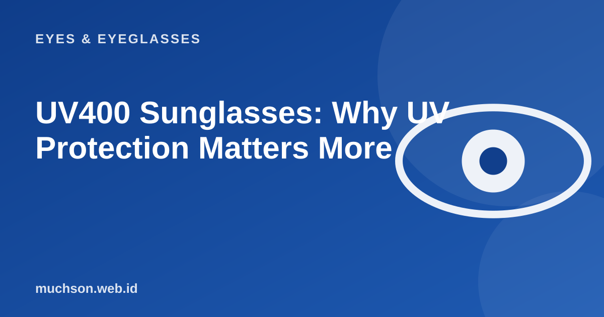

Home › Articles › Eyes & Eyeglasses
Eyes & EyeglassesUV400 Sunglasses: Why UV Protection Matters More
Many people choose sunglasses by colour and style. But their main job is to protect your eyes from ultraviolet light, and dark lenses with no UV protection can make things worse.

Why dark lenses without UV protection are harmful
Behind dark lenses your pupils widen because less light arrives. If the lenses do not filter UV, more UV light enters through those widened pupils. That is why what decides safety is the UV filter, not how dark the colour is.
Text description of the diagram
- 8%: UV-C (absorbed by the atmosphere)
- 30%: UV-B
- 50%: UV-A
- 72%: Visible light
- 95%: Infrared
What the label should say
| Label | What it means |
|---|---|
| UV400 / 100% UV protection | Blocks almost all UV-A and UV-B |
| Polarized | Reduces glare reflected from water and roads; it does not automatically mean there is a UV filter |
| Filter category (0-4) | How dark the lens is; the higher the number the darker |
| Gradient | Darker at the top; comfortable for driving but not for full glare |
Quick check: are they safe enough?
Why it matters
Sunglasses are not only for style. Long-term UV exposure is linked to certain eye problems, and sunglasses also protect the eyelids and the skin around the eyes. Children need protection when they are outside too.
FAQ
Can clear lenses block UV?
Many modern lenses have built-in UV protection, but not all of them. Check the specification.
Are cheap roadside sunglasses safe?
There is no guarantee. Without a label and certification it is hard to be sure of their UV protection.
Do I need sunglasses on a cloudy day?
UV is still there on cloudy days. If you are dazzled or spend a long time outside, sunglasses are still useful.